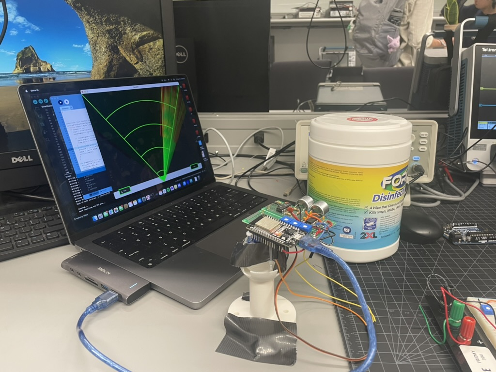
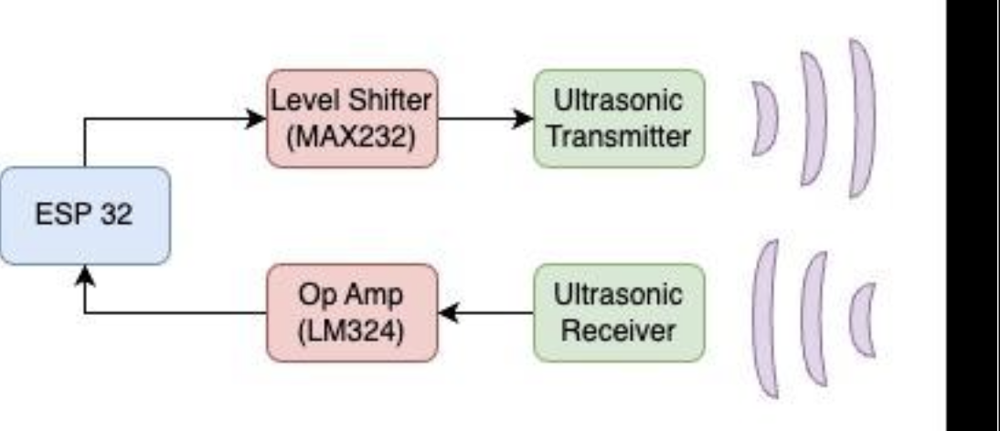
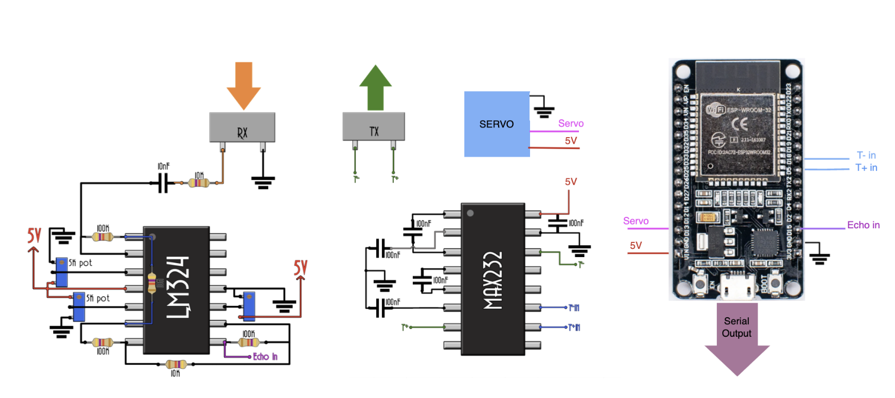

Ultrasonic Sonar Project
Posted on Thu 15 May 2025 in Project
Ultrasonic Sonar Sensor
Overview
I built an ultrasonic sonar system using an ESP32 and custom circuitry. The system emits ultrasonic pulses, measures their return time, and visualizes object distance on a radar-style display. It mimics commercial sensors like the HC-SR04 but is fully built from low-level components and software.


Design Summary
- Transmitter: Uses a level-shifted 40kHz square wave to excite an ultrasonic transducer. I used the MAX232 and capacitors to generate the 15V pulse required.
- Receiver: A 3-stage op-amp (LM324) circuit amplifies the weak echo signal. Careful DC offset tuning ensures ESP32 compatibility.
- Signal Processing: Distance is found by timing echoes using the ESP32 using micros().
- Rotating Scan: A servo sweeps the sensor across an area, and the ESP32 sends angle and distance to a Processing 4 script, which visualizes detected objects in real time.

Key Challenges & Learnings
- Op-Amp Sensitivity: I learned to tune analog circuits using a signal generator and potentiometers. Finding the balance between noise and sensitivity proved difficult.
- Software Timing Conflicts: Running both the servo and sonar timing code on one ESP32 introduced errors. I learned the limits of precise timing on a single microcontroller and resolved it by writing a custom PWM function instead of using the Servo library. The sensor would perform much better with a dedicated microcontroller.
- Noise & Artifacts: The circuit was prone to noise. Though we added a high-pass filter, a more targeted band-pass would have been ideal.
What I Took Away
This project strengthened my understanding of both analog signal design and embedded systems. From carefully creating and tuning op-amp circuits to writing low-level ESP32 code, it brought together theory and hands-on problem solving.